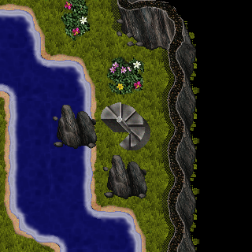
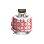
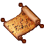
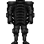

| Quest Name | What to do |
| Progression past level 85 (to 86/41) |
Once you've reached level 85, head to the east area of sdc3 past lavacity to find a set of steps.  Go up the steps into the sullen keep to be able to progress past level 85 |
| Sullen cave entry | Slay Hunters in the first area of sullen keep until a pot that looks like a nork agility drops, drink it  |
| Sullen cave climb up to Sullen keep + Progression past level 86 (To 87) |
Slay Enemies inside the sullen caves until you gather a climbing book and the 10 pages to fill it (Right click the book while in hand to add pages) (Must be level 86 to use the climb up) |
| Progression past level 87 (to 88) |
In the first area of the sullen keep find and climb the steps to be able to progress to level 88 (You'll need to clear all enemies around the steps) |
| Progression past level 88 (to 90) |
In the next area of the sullen keep(Gold armored enemies) find and climb the steps to be able to progress to level 90 (You'll need to be level 88 in order to climb the steps) |
| Progression past level 90 (to 95) |
In the next area of the sullen keep(Black armored enemies) find and climb the steps to be able to progress to level 95 (You'll need to be level 90 in order to climb the steps) |
| Progression past level 95 (to 99) |
In the final area of SK known as the parapets, look for a scroll that drops from the enemies there  The invasion scroll is then taken to a diplomat in NL to be able to advance past level 95 |
Sullen keep armor |
Throughout the sullen keep you'll find armor pages. Purchase the armor mold matching your desired armor and collect the parts 1 through 10 of the armor you want to create Bring then to NAME in the first sullen keep area (silver armored area) Silver armored enemies drop can drop silver and (rarely) gold armor parts Gold armored enemies drop can drop gold and (rarely) black armor parts Black armored enemies drop can drop black and (rarely) green armor parts Green armored enemies drop can drop green armor parts Fieldplates are for barbs and martial artists Silver fieldplate (Level 87) Gold fieldplate (Level 89) Black fieldplate (Level 92) Green fieldplate (Level 95) Boneplates are for all other classes Silver boneplate (Level 87) Gold boneplate (Level 89)  Black boneplate (Level 92) Green boneplate (Level 95) |